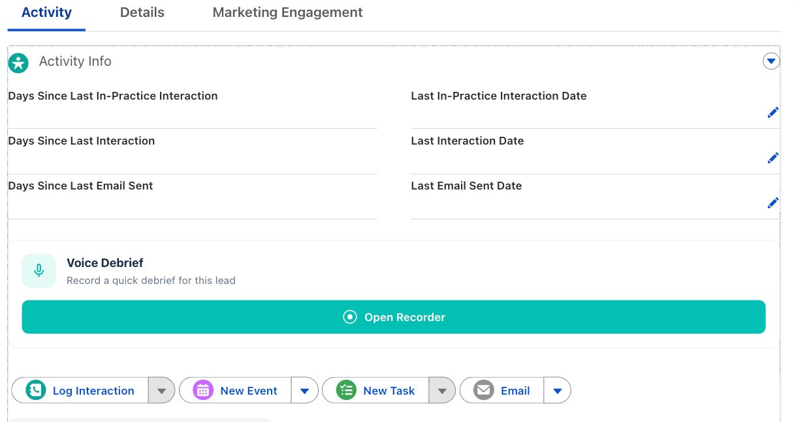

Finish a visit or a call, tap record, and say what happened. Voice Debrief turns plain speech into a logged Salesforce interaction — the task, the scores, the people, the next step — and drafts the follow-up email for you.
On any Contact or Lead, the Voice Debrief card sits right under Activity Info — same spot on both.

Tap once and speak. The recorder captures up to five minutes, then the AI transcribes and reads it while you move on — and hands back a logged interaction with quality scores.
The demo on the right loops through the real states a rep sees: record, analyze, done.
The rep does one thing — talk. Everything after that runs on its own.
Tap once and speak for up to five minutes, or paste written notes if you'd rather type.
It transcribes in your language and reads for outcome, products, people, pain points and the next step.
A completed interaction is logged with quality scores, the right type, and everyone you spoke to.
Convert a hot lead in one tap, or approve an AI-drafted wrap-up email — signed, in the right language.
The recorder grew from a note-taker into a field tool that reads the room and moves the deal forward.
Recordings now run up to five minutes — more than double the old limit. The one thing reps asked for most, because a real visit doesn't fit in two.
You asked for thisSpeak it, add typed notes alongside your voice, or just paste notes you already took — same flow on a Contact or a Lead.
Did you knowWhen a call sounds like real buying interest, it surfaces the opportunity and opens it in one tap — the strongest signal the recorder gives.
Most powerfulCreates the account, contact and opportunity in one step — or convert without an opportunity when it's not a deal yet.
Open the recorder on a lead that's already converted and it warns you up front, with a link to the contact.
Drafts a follow-up you can edit, with Cc added as pills, your full signature, and the conversation's language.
Transcribes and drafts in the language you spoke — the rep never switches context.
Add the people you spoke to as shared activities, so the interaction shows on each of their timelines.
Say when you'll follow up and it creates the Task or Event on that date — so the cadence is set before you've left the screen, not something to remember later.
Every debrief gets a note-quality and transcription-confidence score, so coaching has something to point at.
Tell it "I want to convert this lead" and it triggers the convert and opens the opportunity for you.
Voice commandNo open opportunity here, but this call sounded like active buying interest. Open one?
Opening it at Discover, with you set as the primary contact.
Open on the account, stamped and ready for the next step.
Mention these out loud and the record fills in accurately. Skip one and it simply won't be captured.
Small habits that make the record sharper.
Mention any of these in your debrief and the AI writes it to the right field — no typing, no forms, no special phrasing. Just say it naturally and it's captured.
Filled in when you mention them — and the recorder flags which are still blank, so you know what's worth asking.
The point isn't novelty — it's getting field reality into the CRM consistently, without the admin tax.
A 40-second debrief replaces a form nobody fills in after a long day in clinic.
Every interaction lands with the same fields, scores and people — comparable across the team.
The wrap-up email is drafted and ready to approve, so the next step actually happens.